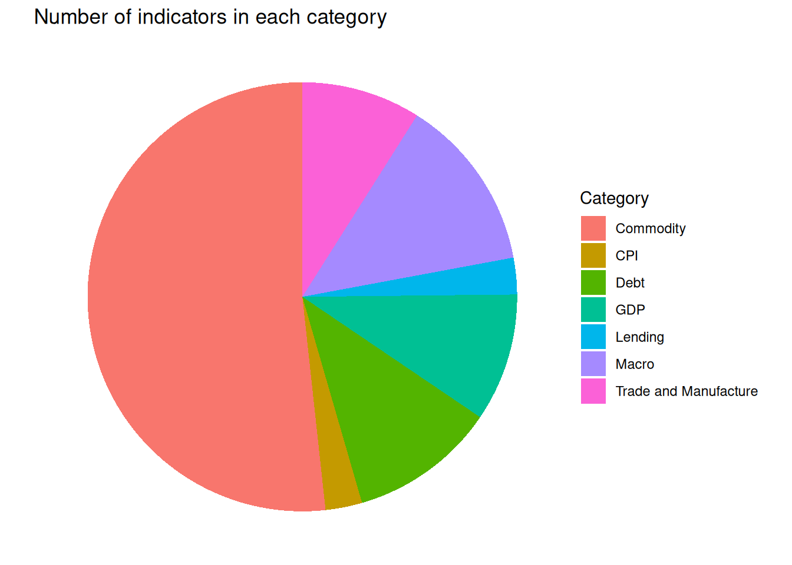
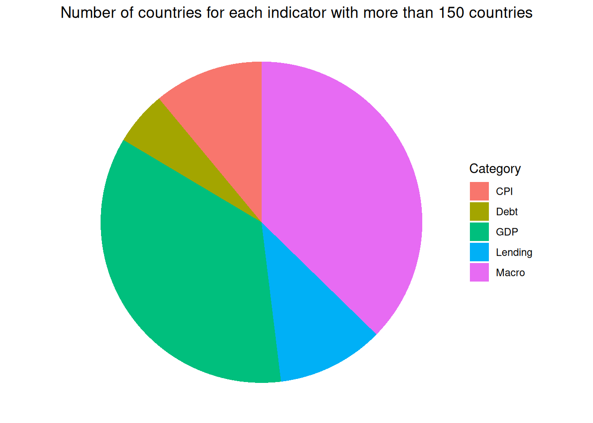
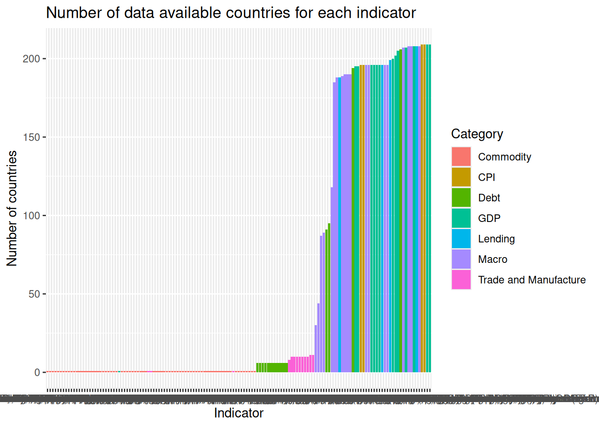
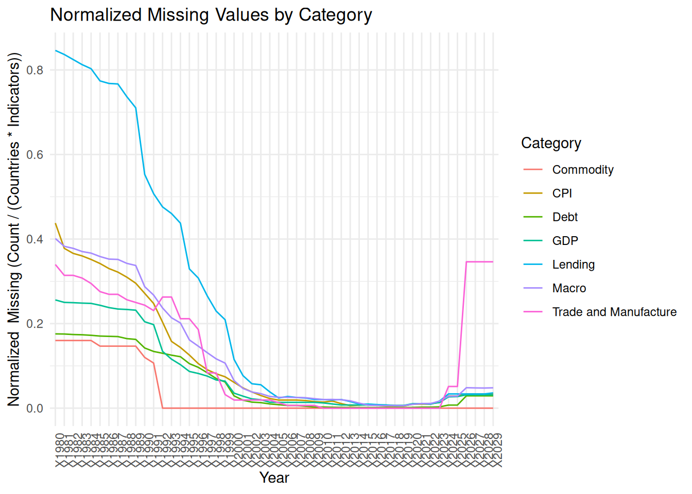

Code
# get data from the file data/dataset_2024-12-27T02_21_53.981794608Z_DEFAULT_INTEGRATION_IMF.RES_WEO_4.0.0.csv
data <- read.csv("data/dataset_2024-12-27T02_21_53.981794608Z_DEFAULT_INTEGRATION_IMF.RES_WEO_4.0.0.csv", header = TRUE, sep = ",")The dataset utilized for this analysis is sourced from the International Monetary Fund (IMF) World Economic Outlook (WEO) database, available on the official IMF website at https://betadata.imf.org/en/datasets/IMF.RES:WEO . The dataset is structured in a wide format(less memory storage), with a focus on the following key columns: COUNTRY.Name, INDICATOR.Name, and annual data columns spanning from X1980 to X2029.
The dataset encompasses a wide range of economic indicators, with particular emphasis on the following metrics relevant to our analysis:
Debt: Measures related to national debt.
Gross Domestic Product (GDP): Both nominal GDP and GDP based on Purchasing Power Parity (PPP).
Revenues and Expenditure: Government fiscal data.
Lending: Indicators related to financial lending activities.
Consumer Price Index (CPI): Inflation metrics.
Unemployment Rate: Labor market statistics.To facilitate analysis, the indicators were manually categorized into the following thematic groups: Debt, Commodity, GDP, Lending, CPI, Macroeconomic Indicators, Trade, and Manufacturing. Additionally, each country was assigned a corresponding continent code to enable cross-regional analysis. This annotated data is stored in the file data/data_continent.csv.
Furthermore, a supplementary dataset, debt_interest_data.csv, was derived to include detailed information on national debt and effective interest rates on these debts for the countries in the dataset. This file will be utilized for visualization purposes in the d3graph.qmd file.
# get data from the file data/dataset_2024-12-27T02_21_53.981794608Z_DEFAULT_INTEGRATION_IMF.RES_WEO_4.0.0.csv
data <- read.csv("data/dataset_2024-12-27T02_21_53.981794608Z_DEFAULT_INTEGRATION_IMF.RES_WEO_4.0.0.csv", header = TRUE, sep = ",")Some indicators are available only for ‘world’ and known group of countries like ‘euro area’, ‘emergent markets’, etc… Notably the commodity, trade and manufacture indicators despite many in numbers, most of them are world arggregation and not country specific, which is why we will not be using them in our analysis. Most Macro economic indicators
debt_indicators <- unique(data$INDICATOR.Name[grepl("debt", data$INDICATOR.Name, ignore.case = TRUE)])
debt_indicators <- as.character(debt_indicators)gdp_indicators <- unique(data$INDICATOR.Name[grepl("Gross domestic product", data$INDICATOR.Name, ignore.case = TRUE)])
gdp_indicators <- as.character(gdp_indicators)lending_indicators <- unique(data$INDICATOR.Name[grepl("lending", data$INDICATOR.Name, ignore.case = TRUE)])
lending_indicators <- as.character(lending_indicators)cpi_indicators <- unique(data$INDICATOR.Name[grepl("CPI", data$INDICATOR.Name, ignore.case = TRUE)])
cpi_indicators <- as.character(cpi_indicators)trade_manufacture_indicators = c("Financial account balance, US Dollar",
"Other investment, Net, US Dollar",
"Change in reserve assets, Net, US Dollar",
"Financial derivatives and employee stock options, Net, US Dollar",
"Imports of goods and services, US Dollar",
"Exports of goods and services, US Dollar",
"Portfolio investment, Net, US Dollar",
"Direct investment, Net, US Dollar",
"Terms of Trade of goods and services, percent change",
"Terms of Trade of goods, percent change",
"Trade of goods and services, Volume, Percent change",
"Manufacturing, Exports, Price deflator, Index",
"Manufacturing, Exports, Price deflator, Percent change")
macro_indicators = c("Gross capital formation, Percent of GDP",
"Expenditure, General government, Domestic currency",
"Gross national savings, Percent of GDP",
"Unemployment rate",
"Structural balance, General government, Percent",
"Population, Number",
"Current account balance, Percent of GDP",
"Structural balance, General government, Domestic currency",
"Imports of goods, Volume, Percent change",
"Exports of goods, Volume, Percent change",
"Current account balance, US Dollar",
"Expenditure, General government, Percent of GDP",
"Exports of goods and services, Volume, Percent change",
"Revenue, General government, Domestic currency",
"Imports of goods and services, Volume, Percent change",
"Revenue, General government, Percent of GDP",
"Domestic currency per international dollar in PPP terms, Domestic currency",
"Employed persons, Number",
"Output Gap, Percent")
all_indicators = c(debt_indicators, gdp_indicators, lending_indicators, cpi_indicators, macro_indicators, trade_manufacture_indicators)
commodity_indicators <- unique(data$INDICATOR.Name[!data$INDICATOR.Name %in% all_indicators])
commodity_indicators <- as.character(commodity_indicators)
all_indicators = c(debt_indicators, gdp_indicators, lending_indicators, cpi_indicators, macro_indicators, trade_manufacture_indicators, commodity_indicators)# Get the number of indicators in each category
debt_indicators_count = length(debt_indicators)
gdp_indicators_count = length(gdp_indicators)
lending_indicators_count = length(lending_indicators)
cpi_indicators_count = length(cpi_indicators)
trade_manufacture_indicators_count = length(trade_manufacture_indicators)
macro_indicators_count = length(macro_indicators)
commodity_indicators_count = length(commodity_indicators)
# Verify that the counts are correct
indicator_count = debt_indicators_count + gdp_indicators_count + lending_indicators_count + cpi_indicators_count + trade_manufacture_indicators_count + macro_indicators_count + commodity_indicators_count
# Create a data frame for the indicators count
indicators_count = data.frame(Category = c("Debt", "GDP", "Lending", "CPI", "Trade and Manufacture", "Macro", "Commodity"), Count = c(debt_indicators_count, gdp_indicators_count, lending_indicators_count, cpi_indicators_count, trade_manufacture_indicators_count, macro_indicators_count, commodity_indicators_count))
# Plot the pie chart
library(ggplot2)
ggplot(indicators_count, aes(x = "", y = Count, fill = Category)) + geom_bar(stat = "identity", width = 1) + coord_polar("y", start = 0) + theme_void() + theme(legend.position = "right") + labs(title = "Number of indicators in each category", fill = "Category")
# Create a data frame for the indicators and their corresponding categories
indicators_categories = data.frame(Indicator = all_indicators,
Category = c(
rep("Debt", length(debt_indicators)),
rep("GDP", length(gdp_indicators)),
rep("Lending", length(lending_indicators)),
rep("CPI", length(cpi_indicators)),
rep("Macro", length(macro_indicators)),
rep("Trade and Manufacture", length(trade_manufacture_indicators)),
rep("Commodity", length(commodity_indicators)))
)
indicators_categories$Country.Count = 0
for (i in 1:nrow(indicators_categories)) {
indicator = indicators_categories$Indicator[i]
category = indicators_categories$Category[i]
countries = unique(data$COUNTRY.Name[data$INDICATOR.Name == indicator])
indicators_categories$Country.Count[i] = length(countries)
}indicators_categories_150 = indicators_categories[indicators_categories$Country.Count > 150,]
for (category in unique(indicators_categories_150$Category)) {
count = nrow(indicators_categories_150[indicators_categories_150$Category == category,])
}
ggplot(indicators_categories_150, aes(x = "", y = Country.Count, fill = Category)) + geom_bar(stat = "identity", width = 1) + coord_polar("y", start = 0) + theme_void() + theme(legend.position = "right") + labs(title = "Number of countries for each indicator with more than 150 countries", fill = "Category")
A common challenge in this dataset is that data availability varies substantially across both indicators and years. As shown in the first plot, some indicators (e.g., those only reported for “World,” “Euro Area,” or certain regional groups) have data for fewer countries, while others are available for a much larger set of countries. In the second plot, we see that missing data rates for most categories are quite high in the early 1980s but steadily improve over time. By around 2000, categories like CPI, GDP, Debt, and Trade & Manufacture reach near-complete coverage(95%) , while Macro—initially showing the highest proportion of missing data—also sees a major improvement.
indicators_categories = indicators_categories[order(indicators_categories$Country.Count, decreasing = TRUE),]
options(repr.plot.width=10, repr.plot.height=10)
ggplot(indicators_categories, aes(x = reorder(Indicator, Country.Count), y = Country.Count, fill = Category)) + geom_bar(stat = "identity") + labs(title = "Number of data available countries for each indicator", x = "Indicator", y = "Number of countries", fill = "Category")
suppressPackageStartupMessages(library(dplyr))
library(dplyr)
year_columns <- paste0("X", 1980:2029)
categories = unique(indicators_categories$Category)
missing_counts <- vector("list", length(categories))
names(missing_counts) <- categories
for (i in 1:nrow(data)) {
current_indicator <- data$INDICATOR.Name[i]
category <- indicators_categories$Category[indicators_categories$Indicator == current_indicator]
if (length(category) != 1) {
next
}
for (year in year_columns) {
if (is.na(data[i, year])) {
if (is.null(missing_counts[[category]])) {
missing_counts[[category]] <- setNames(rep(0, length(year_columns)), year_columns)
}
missing_counts[[category]][year] <- missing_counts[[category]][year] + 1
}
}
}
missing_values <- do.call(rbind, lapply(names(missing_counts), function(category) {
data.frame(
Category = category,
Year = factor(names(missing_counts[[category]]), levels = year_columns),
Count = missing_counts[[category]],
stringsAsFactors = FALSE
)
}))
missing_values <- missing_values |>
group_by(Category) |>
arrange(Year) |>
mutate(Cumulative = cumsum(Count))
unique_categories <- unique(missing_values$Category)
num_countries <- length(unique(data$COUNTRY.Name))
missing_values$NormalizedCumulative <- NA
for (cat in unique_categories) {
num_countries <- length(unique(data$COUNTRY.Name[data$INDICATOR.Name %in% indicators_categories$Indicator[indicators_categories$Category == cat]]))
unique_indicators <- unique(indicators_categories$Indicator[indicators_categories$Category == cat])
num_indicators <- length(unique_indicators)
normalization_factor <- num_countries * num_indicators
idx <- which(missing_values$Category == cat)
for (i in idx) {
missing_values$NormalizedCumulative[i] <- missing_values$Count[i] / normalization_factor
}
}
ggplot(missing_values, aes(x = Year, y = NormalizedCumulative, color = Category, group = Category)) +
geom_line() +
labs(
title = "Normalized Missing Values by Category",
x = "Year",
y = "Normalized Missing (Count / (Countries * Indicators))"
) +
theme_minimal() +
theme(axis.text.x = element_text(angle = 90, hjust = 1))